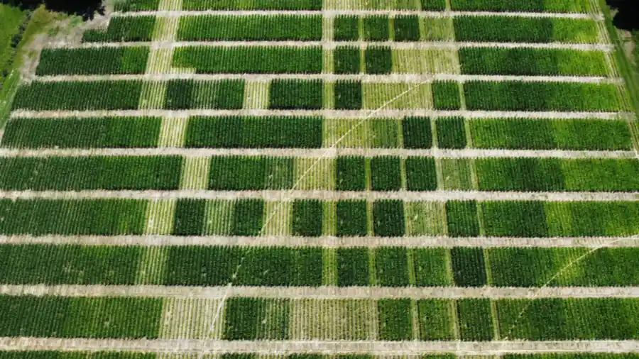

Amrinder Jakhar · Ph.D. candidate, Crop and Soil Sciences, University of Georgia · aj01359@uga.edu · amrinderjakhar.com

Amrinder Jakhar
I am a Ph.D. candidate at the University of Georgia. I study in-season nitrogen management in corn using canopy sensors, drone and satellite imagery, and machine learning.
- 5peer-reviewed articles
- 6site-years of corn N trials
- 3sensing platforms compared
- 12+research and hackathon awards
About me
I work in Dr. Leonardo M. Bastos's lab in the Department of Crop and Soil Sciences. I defended my dissertation in October 2026 and will graduate in May 2027.
Most of my Ph.D. has been in corn fields in Georgia. I compare handheld canopy sensors, drone imagery and satellite imagery for deciding how much nitrogen to side-dress, and I led a meta-analysis on sensor-based variable-rate nitrogen in maize that came out in Precision Agriculture in 2026.
I also fit machine learning models, mostly gradient boosting and random forests in R, and have worked with lab mates on yield prediction for peanut and cotton. For my M.S. at Mississippi State University I studied biochar and gypsum in Delta cotton and soybean, including how they change nutrient losses in soil water.
I am looking for positions in precision agriculture and agricultural data science starting in 2027.
News
- Presented an oral talk and a poster at CANVAS 2026 in Portland, OR.
- Defended my Ph.D. dissertation at the University of Georgia.
- 2nd place, NxS Hackathon, and 3rd place poster at the Nitrogen Use Efficiency Workshop.
- Invited speaker, Brazil-Global Digital Agriculture Workshop, UNESP Jaboticabal.
- Meta-analysis on sensor-based variable-rate nitrogen published in Precision Agriculture.
- 1st place, Bayer Graduate Hackathon Challenge (Team DataGenix), CANVAS 2025.
Research
All researchSensor-based nitrogen management
Using canopy sensors to set side-dress nitrogen rates in irrigated corn.
Remote sensing
Comparing proximal canopy sensors, UAV multispectral and satellite imagery over the same plots.
Machine learning
Yield prediction and image models built from field, weather and sensor data.
Soil and water quality
My M.S. work on biochar and gypsum and on nutrient losses in Mississippi Delta soils.
Peer-reviewed journal articles
Full list- 2026In-season optical sensor-based variable-rate nitrogen management in maize production: a meta-analysis First authorJakhar, A., Scarpin, G. J., Lacerda, L. N., Ortiz, B. V., Cabrera, M. L., Vellidis, G., & Bastos, L. M.Precision Agriculture, 27(5), 137
- 2026Peanut yield and grade prediction in Georgia, USA: integrating management, climate, and remote sensing data with explainable AIScarpin, G. J., Studstill, S. B., Monfort, W. S., Tubbs, R. S., Pilon, C., Jakhar, A., Bhattarai, A., Dhaliwal, A. K., & Bastos, L. M.Computers and Electronics in Agriculture, 241, 111270
- 2026Biochar and gypsum effects on soil properties and soil solution under soybean production systemsSharma, R., Jakhar, A., Singh, G., Dhillon, J., Nelson, K., Chinthalapudi, D., & Kaur, G.Agrosystems, Geosciences & Environment
- 2025Optimizing unmanned aerial vehicle LiDAR data collection in cotton through flight settings and data processingBhattarai, A., Scarpin, G. J., Jakhar, A., Porter, W., Hand, L. C., Snider, J. L., & Bastos, L. M.Remote Sensing, 17(9), 1504
- 2025Biochar impact on soil properties and soil solution nutrient concentrations under cotton productionSharma, R. K., Singh, G., Jakhar, A., Dhillon, J., Anapalli, S. S., Nelson, K. A., & Kaur, G.Journal of Environmental Management, 386, 125660